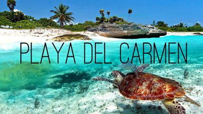

My Favorite Travels
I love to travel.
That makes it really hard to choose a favorite... but I'll go with Mexico because I'm going back in March!
The idea really came to fruition when my kids starting making their wish list to Santa this year. They all decided to ask for the opportunity to swim with dolphin instead of toys (OK, I may have planted that idea in their heads!). It made Santa's job a lot easier this year, albeit a tad more expensive than the usual Legos.
I've been to Mexico twice before:
- A quick trip to Tijuana for the day when I was in high school.
- A few days to Cancun with my husband 3 years ago.
Aside from the dolphin experience, we're planning to log a lot of time body surfing, building sand castles and enjoying the warm sunshine.